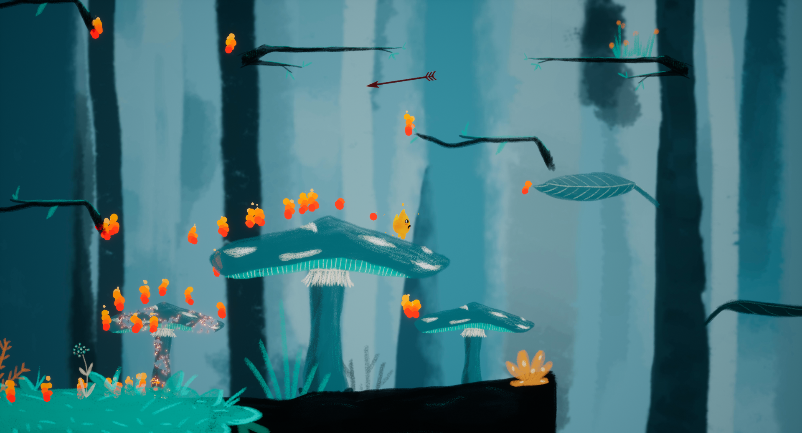

How to run the game
Download and extract the .zip archive. Run ue4Jam.exe.
Please note that the game requires a 64bit version of windows and a screen resolution of at least 1280x720.
Description
Currently a prototype, FireRun is a 2D Platformer. It was made for the UE4 summer game jam 2018 : "That escalated quickly" theme. The level is created using procedural generation.
Play as the flame "flamy" who just kissed a match in a very big forest ... Search for an escape from your own flames. But be carefull to water ! (not animated...) Will you survive to this explosive love ?
Keys
- Joystyick to move
- A to jump
- Joytick + hold A to go throw platform
! You need a XBOX controller to play !
Authors
This game was made for a game gam by :
- Pelloux-Prayer Ophélie
- Passet Fany
- Nesme Vincent